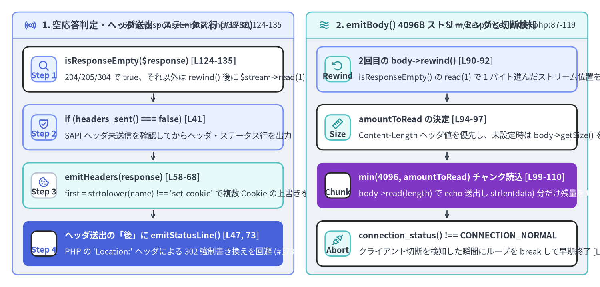
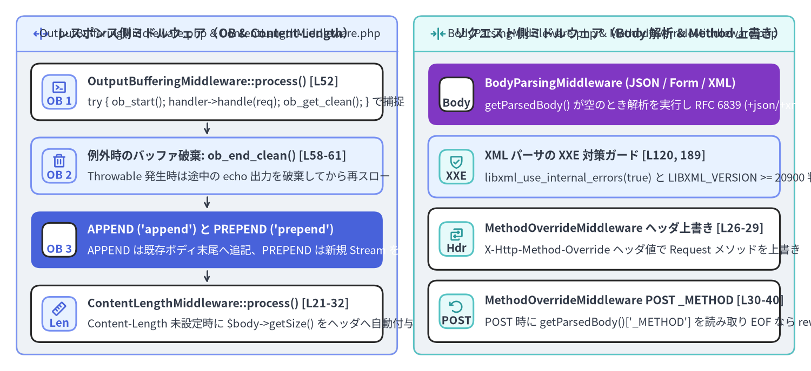

ResponseEmitter・チャンク SAPI ストリーミング・OutputBuffering の内部実装
Slim\App::run()（Slim/App.php:186-196）による HTTP リクエスト処理の最終段階において、Slim は性質の異なる2つの世界を橋渡しする必要があります。すなわち、$this->handle($request) が返却した 不変（Immutable）かつステートレスな PSR-7 ResponseInterface 値オブジェクト と、状態を持つ PHP SAPI の出力バッファおよびグローバルヘッダスタック（header()、headers_sent()、echo、connection_status()）です。最終章となる本章では、Slim\ResponseEmitter（Slim/ResponseEmitter.php、全 137 行 / 92 LOC）と、4つの標準 HTTP ユーティリティミドルウェア（OutputBufferingMiddleware、ContentLengthMiddleware、BodyParsingMiddleware、MethodOverrideMiddleware）の内部実装を解剖します。

Source Code
from drawlib.canvas import save, setup
from drawlib.icons import phosphor
from drawlib.smartarts import CardList, Panel
from drawlib.styles import Colors, Styles
setup(width=196, height=94, dpi=150)
# Left Panel: isResponseEmpty(), emitHeaders() & emitStatusLine()
p_left = Panel(
"1. 空応答判定・ヘッダ送出・ステータス行 (#1730)",
"Slim/ResponseEmitter.php:38-82, 124-135",
style=Styles.Neutral.patch(shape_r=2.0),
header_style=Styles.PrimaryNeutral.patch(shape_line_width=1.2),
text_style=Styles.DarkBold.patch(text_size=10.8),
description_style=Styles.Dark.patch(text_size=9.8),
icon=phosphor.broadcast,
icon_style=Styles.PrimaryBold,
header_variant="filled",
header_height=8.5,
)
p_left.draw((4.0, 4.0), width=92.0, height=86.0)
lx, lw, lh = p_left.get_content_box((4.0, 4.0), width=92.0, height=86.0, padding=(3.5, 2.8))
hdr_steps = CardList(
style=Styles.White,
text_style=Styles.DarkBold.patch(text_size=10.2),
description_style=Styles.Dark.patch(text_size=9.8),
badge_shape="rounded_rect",
badge_style=Styles.PrimaryNeutral,
badge_text_style=Styles.PrimaryBold.patch(text_size=9.8),
icon_style=Styles.PrimaryBold,
direction="vertical",
spacing=2.5,
show_arrows=True,
arrow_style=Styles.DarkBold.patch(line_arrow_head_scale=10, line_width=1.3),
)
hdr_steps.add(
"isResponseEmpty($response) [L124-135]",
"204/205/304 で true、それ以外は rewind() 後に $stream->read(1) === '' 判定",
badge_text="Step 1",
icon=phosphor.magnifying_glass,
)
hdr_steps.add(
"if (headers_sent() === false) [L41]",
"SAPI ヘッダ未送信を確認してからヘッダ・ステータス行を出力",
badge_text="Step 2",
icon=phosphor.shield_check,
style=Styles.PrimaryNeutral,
)
hdr_steps.add(
"emitHeaders(response) [L58-68]",
"first = strtolower(name) !== 'set-cookie' で複数 Cookie の上書きを防止",
badge_text="Step 3",
icon=phosphor.cookie,
style=Styles.SecondaryNeutral,
badge_style=Styles.White.patch(shape_line_color=Colors.Gray4),
badge_text_style=Styles.DarkBold.patch(text_size=9.8),
)
hdr_steps.add(
"ヘッダ送出の「後」に emitStatusLine() [L47, 73]",
"PHP の 'Location:' ヘッダによる 302 強制書き換えを回避 (#1730)",
badge_text="Step 4",
icon=phosphor.check_circle,
style=Styles.PrimaryFlat,
text_style=Styles.WhiteBold.patch(text_size=10.2),
description_style=Styles.White.patch(text_size=9.8),
badge_style=Styles.White,
badge_text_style=Styles.PrimaryBold.patch(text_size=9.8),
icon_style=Styles.WhiteBold,
)
hdr_steps.draw(xy=lx, width=lw, height=lh)
# Right Panel: emitBody() Chunked Streaming & Connection Abort
p_right = Panel(
"2. emitBody() 4096B ストリーミングと切断検知",
"Slim/ResponseEmitter.php:87-119",
style=Styles.Neutral.patch(shape_r=2.0),
header_style=Styles.SecondaryNeutral.patch(shape_line_width=1.2),
text_style=Styles.DarkBold.patch(text_size=10.8),
description_style=Styles.Dark.patch(text_size=9.8),
icon=phosphor.waves,
icon_style=Styles.SecondaryBold,
header_variant="filled",
header_height=8.5,
)
p_right.draw((100.0, 4.0), width=92.0, height=86.0)
rx, rw, rh = p_right.get_content_box((100.0, 4.0), width=92.0, height=86.0, padding=(3.5, 2.8))
body_steps = CardList(
style=Styles.White,
text_style=Styles.DarkBold.patch(text_size=10.2),
description_style=Styles.Dark.patch(text_size=9.8),
badge_shape="rounded_rect",
badge_style=Styles.SecondaryNeutral,
badge_text_style=Styles.DarkBold.patch(text_size=9.8),
icon_style=Styles.SecondaryBold,
direction="vertical",
spacing=2.5,
show_arrows=True,
arrow_style=Styles.DarkBold.patch(line_arrow_head_scale=10, line_width=1.3),
)
body_steps.add(
"2回目の body->rewind() [L90-92]",
"isResponseEmpty() の read(1) で 1 バイト進んだストリーム位置を先頭へ戻す",
badge_text="Rewind",
icon=phosphor.arrow_counter_clockwise,
style=Styles.PrimaryNeutral,
)
body_steps.add(
"amountToRead の決定 [L94-97]",
"Content-Length ヘッダ値を優先し、未設定時は body->getSize() を使用",
badge_text="Size",
icon=phosphor.ruler,
)
body_steps.add(
"min(4096, amountToRead) チャンク読込 [L99-110]",
"body->read(length) で echo 送出し strlen(data) 分だけ残量を減算",
badge_text="Chunk",
icon=phosphor.lightning,
style=Styles.AccentFlat,
text_style=Styles.WhiteBold.patch(text_size=10.2),
description_style=Styles.White.patch(text_size=9.8),
badge_style=Styles.White,
badge_text_style=Styles.DarkBold.patch(text_size=9.8),
icon_style=Styles.WhiteBold,
)
body_steps.add(
"connection_status() !== CONNECTION_NORMAL",
"クライアント切断を検知した瞬間にループを break して早期終了 [L107, 114]",
badge_text="Abort",
icon=phosphor.plugs,
)
body_steps.draw(xy=rx, width=rw, height=lh)
save()
1. ResponseEmitter::emit() の内部実装（Slim/ResponseEmitter.php:26-136）
App::run()（Slim/App.php:193-195）は、$response = $this->handle($request) の完了直後に new ResponseEmitter()（デフォルトのチャンクサイズ $this->responseChunkSize = 4096 バイト）を生成し、$responseEmitter->emit($response) を呼び出します。
// Slim/ResponseEmitter.php:38-53
public function emit(ResponseInterface $response): void
{
$isEmpty = $this->isResponseEmpty($response);
if (headers_sent() === false) {
$this->emitHeaders($response);
// Set the status _after_ the headers, because of PHP's "helpful" behavior with location headers.
// See https://github.com/slimphp/Slim/issues/1730
$this->emitStatusLine($response);
}
if (!$isEmpty) {
$this->emitBody($response);
}
}
このわずか 100 行あまりのクラスには、PHP SAPI 特有の挙動に対処する 4つの重要なエンジニアリング上の工夫 が凝縮されています。
1. なぜ isResponseEmpty() は 1 バイト読み込み、emitBody() で 2 回目の rewind() を行うのか？（89-92, 124-135 行目）
// Slim/ResponseEmitter.php:124-135
public function isResponseEmpty(ResponseInterface $response): bool
{
if (in_array($response->getStatusCode(), [204, 205, 304], true)) {
return true;
}
$stream = $response->getBody();
$seekable = $stream->isSeekable();
if ($seekable) {
$stream->rewind();
}
return $seekable ? $stream->read(1) === '' : $stream->eof();
}
- RFC 空ボディステータスの短絡評価（125 行目）: HTTP
204 No Content・205 Reset Content・304 Not Modifiedの場合は、万一ストリームにデータが残っていても RFC 規約に従い即座にtrue（ボディ送出なし）と判定します。 - なぜ
$stream->eof()ではなく$stream->read(1) === ''なのか？: PHP のストリーム（php://tempやphp://memory）では、終端を超えて読み込みを試みるまでfeof()がtrueになりません。そのため、シーク可能な空ストリームに対してrewind()した直後はeof()がfalseを返してしまいます。確実に空かどうかを判定するため、isResponseEmpty()は実際に$stream->read(1) === ''で先頭 1 バイトの読み取りを試みます。 - なぜ
emitBody()の冒頭（90〜92 行目）で再度$body->rewind()するのか？: シーク可能な非空ストリームの場合、isResponseEmpty()の$stream->read(1)によってストリームの内部ポインタがオフセット1に進んでしまいます。先頭の 1 バイト目が欠落するのを防ぐため、emitBody()は 91 行目で必ず 2 回目の$body->rewind()を実行してからチャンク読み込みを開始します。
2. Set-Cookie ヘッダの複数送出保護（Slim/ResponseEmitter.php:58-68）
// Slim/ResponseEmitter.php:58-68
private function emitHeaders(ResponseInterface $response): void
{
foreach ($response->getHeaders() as $name => $values) {
$first = strtolower($name) !== 'set-cookie';
foreach ($values as $value) {
$header = sprintf('%s: %s', $name, $value);
header($header, $first);
$first = false;
}
}
}
PHP の header(string $header, bool $replace = true) 関数は、第2引数 $replace が true だと同名の既存ヘッダを上書きします。
- 通常のヘッダでは、
$first = trueで始まるため 1 つ目の値で SAPI 既定ヘッダを上書きし、2 つ目以降の値は$first = falseで追記されます。 - 一方
Set-Cookieヘッダでは、strtolower($name) !== 'set-cookie'によって最初から$first = falseとなるため、複数のSet-Cookieヘッダや事前にsetcookie()で発行された Cookie が上書き消去されることなくすべてクライアントへ送出されます。
3. なぜ emitStatusLine() を emitHeaders() の「後」に呼ぶのか？（Issue #1730、42-48, 73-82 行目）
PHP の header() 関数には、「Location: ... ヘッダが渡された際、現在のステータスコードが 200 であれば自動的に 302 Found に書き換える」という C 言語レベルの SAPI 仕様が存在します。もし emitStatusLine() を先に呼んでしまうと、201 Created + Location: /users/42 のような REST API レスポンスが PHP によって勝手に 302 に変えられてしまうケースがあります。そのため Slim は すべてのヘッダを出力し終えた後 に emitStatusLine() を呼び出し、header($statusLine, true, $response->getStatusCode())（81 行目）で PSR-7 レスポンスのステータスコードを確実に確定させます。
4. 4096 バイト単位のチャンク配信とクライアント切断検知（Slim/ResponseEmitter.php:94-118）
巨大なストリームを echo (string) $response->getBody() で一括メモリ展開して OOM（メモリ上限超過）を起こすのを防ぐため、emitBody() は $this->responseChunkSize（デフォルト 4096 バイト）ずつ read() して echo します。さらに毎ループごとに if (connection_status() !== CONNECTION_NORMAL) { break; }（107・114 行目）を検査し、クライアントが途中で通信を切断した場合は即座にストリーム読み込みを打ち切ります。
2. OutputBufferingMiddleware と標準 HTTP ユーティリティミドルウェア群
RoutingMiddleware と ErrorMiddleware に加え、Slim\Middleware\* には HTTP メッセージの入出力を正規化する 4 つの標準 PSR-15 ミドルウェアが用意されています。

Source Code
from drawlib.canvas import save, setup
from drawlib.icons import phosphor
from drawlib.smartarts import CardList, Panel
from drawlib.styles import Colors, Styles
setup(width=196, height=90, dpi=150)
# Left Panel: OutputBufferingMiddleware & ContentLengthMiddleware (Response Path)
p_left = Panel(
"レスポンス側ミドルウェア（OB & Content-Length）",
"OutputBufferingMiddleware.php & ContentLengthMiddleware.php",
style=Styles.Neutral.patch(shape_r=2.0),
header_style=Styles.PrimaryNeutral.patch(shape_line_width=1.2),
text_style=Styles.DarkBold.patch(text_size=10.8),
description_style=Styles.Dark.patch(text_size=9.8),
icon=phosphor.arrows_out_line_horizontal,
icon_style=Styles.PrimaryBold,
header_variant="filled",
header_height=8.5,
)
p_left.draw((4.0, 4.0), width=92.0, height=82.0)
lx, lw, lh = p_left.get_content_box((4.0, 4.0), width=92.0, height=82.0, padding=(3.5, 3.0))
ob_list = CardList(
style=Styles.White,
text_style=Styles.DarkBold.patch(text_size=10.2),
description_style=Styles.Dark.patch(text_size=9.8),
badge_shape="rounded_rect",
badge_style=Styles.PrimaryNeutral,
badge_text_style=Styles.PrimaryBold.patch(text_size=9.8),
icon_style=Styles.PrimaryBold,
direction="vertical",
spacing=2.6,
show_arrows=True,
arrow_style=Styles.DarkBold.patch(line_arrow_head_scale=10, line_width=1.3),
)
ob_list.add(
"OutputBufferingMiddleware::process() [L52]",
"try { ob_start(); handler->handle(req); ob_get_clean(); } で捕捉",
badge_text="OB 1",
icon=phosphor.terminal_window,
)
ob_list.add(
"例外時のバッファ破棄: ob_end_clean() [L58-61]",
"Throwable 発生時は途中の echo 出力を破棄してから再スロー",
badge_text="OB 2",
icon=phosphor.trash,
style=Styles.PrimaryNeutral,
)
ob_list.add(
"APPEND ('append') と PREPEND ('prepend')",
"APPEND は既存ボディ末尾へ追記、PREPEND は新規 Stream を生成",
badge_text="OB 3",
icon=phosphor.git_fork,
style=Styles.PrimaryFlat,
text_style=Styles.WhiteBold.patch(text_size=10.2),
description_style=Styles.White.patch(text_size=9.8),
badge_style=Styles.White,
badge_text_style=Styles.PrimaryBold.patch(text_size=9.8),
icon_style=Styles.WhiteBold,
)
ob_list.add(
"ContentLengthMiddleware::process() [L21-32]",
"Content-Length 未設定時に $body->getSize() をヘッダへ自動付与",
badge_text="Len",
icon=phosphor.ruler,
)
ob_list.draw(xy=lx, width=lw, height=lh)
# Right Panel: BodyParsingMiddleware & MethodOverrideMiddleware (Request Path)
p_right = Panel(
"リクエスト側ミドルウェア（Body 解析 & Method 上書き）",
"BodyParsingMiddleware.php & MethodOverrideMiddleware.php",
style=Styles.Neutral.patch(shape_r=2.0),
header_style=Styles.SecondaryNeutral.patch(shape_line_width=1.2),
text_style=Styles.DarkBold.patch(text_size=10.8),
description_style=Styles.Dark.patch(text_size=9.8),
icon=phosphor.arrows_in_line_horizontal,
icon_style=Styles.SecondaryBold,
header_variant="filled",
header_height=8.5,
)
p_right.draw((100.0, 4.0), width=92.0, height=82.0)
rx, rw, rh = p_right.get_content_box((100.0, 4.0), width=92.0, height=82.0, padding=(3.5, 3.0))
req_list = CardList(
style=Styles.White,
text_style=Styles.DarkBold.patch(text_size=10.2),
description_style=Styles.Dark.patch(text_size=9.8),
badge_shape="rounded_rect",
badge_style=Styles.SecondaryNeutral,
badge_text_style=Styles.DarkBold.patch(text_size=9.8),
icon_style=Styles.SecondaryBold,
direction="vertical",
spacing=2.6,
)
req_list.add(
"BodyParsingMiddleware (JSON / Form / XML)",
"getParsedBody() が空のとき解析を実行し RFC 6839 (+json/+xml) に対応",
badge_text="Body",
icon=phosphor.brackets_curly,
style=Styles.AccentFlat,
text_style=Styles.WhiteBold.patch(text_size=10.2),
description_style=Styles.White.patch(text_size=9.8),
badge_style=Styles.White,
badge_text_style=Styles.DarkBold.patch(text_size=9.8),
icon_style=Styles.WhiteBold,
)
req_list.add(
"XML パーサの XXE 対策ガード [L120, 189]",
"libxml_use_internal_errors(true) と LIBXML_VERSION >= 20900 判定",
badge_text="XXE",
icon=phosphor.shield_check,
style=Styles.PrimaryNeutral,
)
req_list.add(
"MethodOverrideMiddleware ヘッダ上書き [L26-29]",
"X-Http-Method-Override ヘッダ値で Request メソッドを上書き",
badge_text="Hdr",
icon=phosphor.swap,
)
req_list.add(
"MethodOverrideMiddleware POST _METHOD [L30-40]",
"POST 時に getParsedBody()['_METHOD'] を読み取り EOF なら rewind()",
badge_text="POST",
icon=phosphor.arrow_counter_clockwise,
)
req_list.draw(xy=rx, width=rw, height=lh)
save()
OutputBufferingMiddleware：APPEND と PREPEND の違い（Slim/Middleware/OutputBufferingMiddleware.php:52-74）
ハンドラや外部ライブラリ内で誤って echo や print が実行されると、ResponseEmitter::emit() より前に SAPI 出力がフラッシュされてヘッダ送信不能（headers_sent() === true）になったり、JSON レスポンスが破損したりします。OutputBufferingMiddleware は PHP の出力バッファリング関数で後続ハンドラを包み込み、標準出力へ漏れた文字列を PSR-7 の ResponseInterface ストリームへと回収します。
// Slim/Middleware/OutputBufferingMiddleware.php:52-74
public function process(ServerRequestInterface $request, RequestHandlerInterface $handler): ResponseInterface
{
try {
ob_start();
$response = $handler->handle($request);
$output = ob_get_clean();
} catch (Throwable $e) {
ob_end_clean();
throw $e;
}
if (!empty($output)) {
if ($this->style === static::PREPEND) {
$body = $this->streamFactory->createStream();
$body->write($output . $response->getBody());
$response = $response->withBody($body);
} elseif ($this->style === static::APPEND && $response->getBody()->isWritable()) {
$response->getBody()->write($output);
}
}
return $response;
}
OutputBufferingMiddleware::APPEND（デフォルト、68〜70 行目）:$response->getBody()->isWritable()が真であれば、既存のレスポンスボディ末尾に$outputを追記します。OutputBufferingMiddleware::PREPEND（64〜67 行目）:$this->streamFactory->createStream()で新しいストリームを生成し、$output . $response->getBody()の順で書き込んで$response->withBody($body)で差し替えます。- 例外発生時のクリーンアップ（58〜61 行目）: 下流で例外がスローされた場合は
ob_end_clean()で途中のecho出力を完全に破棄してから例外を再スローするため、ErrorMiddlewareが生成するエラー JSON や HTML にゴミ出力が混入しません。
標準 HTTP ユーティリティミドルウェアの比較まとめ
ミドルウェアクラス（Slim\Middleware\*） |
ソースファイル・LOC | 内部メカニズムとミドルウェア配置順序の注意点 |
|---|---|---|
BodyParsingMiddleware |
Slim/Middleware/BodyParsingMiddleware.php（202 行 / 126 LOC） |
getMediaType()（177〜187 行目）で ; charset=... を除去し、$this->bodyParsers[$mediaType] を検索。未登録時は RFC 6839 の + サフィックス（application/problem+json -> application/json、150〜156 行目）へフォールバックし、戻り値が array|object|null であることを検証します。 |
MethodOverrideMiddleware |
Slim/Middleware/MethodOverrideMiddleware.php（45 行 / 31 LOC） |
X-Http-Method-Override ヘッダ（26〜29 行目）または POST リクエストの $request->getParsedBody()['_METHOD']（30〜35 行目）でリクエストメソッドを上書きします。RoutingMiddleware より外側（後からの add）、かつ BodyParsingMiddleware より**内側（先での add）**に配置する必要があります。 |
ContentLengthMiddleware |
Slim/Middleware/ContentLengthMiddleware.php（34 行 / 20 LOC） |
$response = $handler->handle($request) の実行後、$size = $response->getBody()->getSize() が取得可能かつ Content-Length ヘッダが未設定の場合に Content-Length: (string) $size を付与します。 |
全体概要への復帰と姉妹ポータルのご案内
- アーキテクチャ全体像 に戻り、PSR-15 パイプライン全体の流れを再確認できます。
- 実践的なアプリケーション構築パターンは Slim 4 ユーザーガイド、全クラス・インターフェースのシグネチャ検索は Slim 4 API リファレンス、また AST 静的解析・PCOV カバレッジ（
99.4%）・セキュリティ監査の詳細は PNI501 診断レポート をぜひご活用ください。